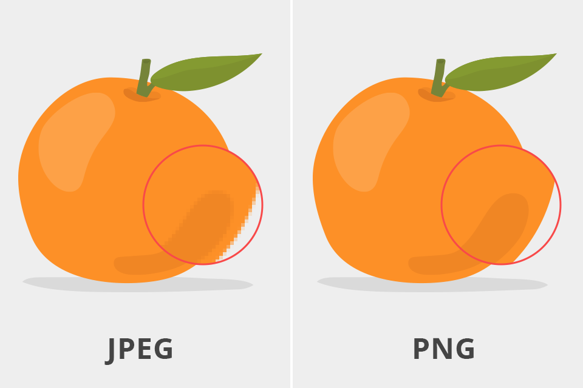

|
 |
Los algoritmos de compresión sin pérdida (o lossless compression en inglés) son métodos que reducen el tamaño de un archivo sin eliminar ningún dato. Esto significa que, al descomprimir el archivo, se puede recuperar exactamente la misma información original, bit por bi
Se utilizan principalmente en multimedia, donde una pequeña pérdida de calidad es aceptable a cambio de una gran reducción en el tamaño del archivo:
.Imágenes (JPEG, WebP).
Audio (MP3, AAC)
Video (MP4, H.264, H.265)
¿Cómo funcionan?
Los algoritmos con pérdida aplican técnicas como:
Eliminar datos redundantes o imperceptibles
Principales algoritmos de compresión sin pérdida:
Reducir la precisión de ciertos colores o sonidos
Transformar los datos a un dominio más eficiente (como frecuencia en vez de tiempo)
| Algortimo | Formato / Uso común | Cómo funciona |
| JPEG | Imágenes | Usa compresión basada en bloques, transformada DCT, y eliminación de detalles finos | .
| MP3 | Audio | Elimina frecuencias inaudibles y usa codificación psicoacústica | .